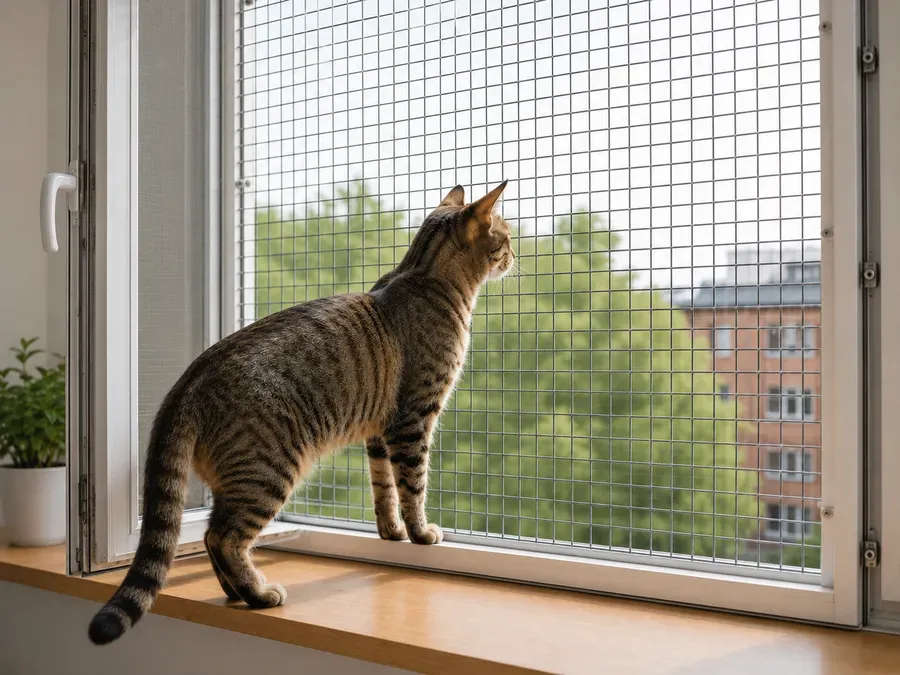
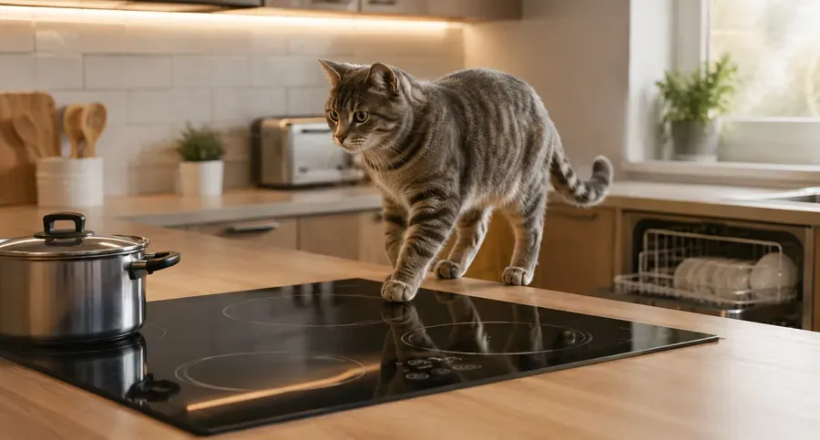
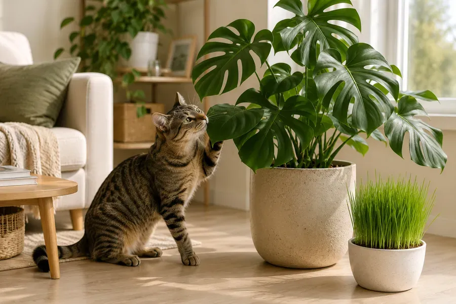

Небезпеки вдома
Ваш дім — це фортеця, але для допитливого кота він повний прихованих пасток. Дізнайтеся, як запобігти трагедії.
1Вертикальне провітрювання
Обережно
Відкинуте вікно — смертельна пастка. Коти намагаються вибратися, зісковзують у вузьку щілину й застрягають, що призводить до задухи, некрозу тканин або травм хребта.
Рішення: бічні захисні ґрати або системи «антикіт» (не москітні сітки).

2Дрібні предмети
Гумки для волосся, голки та нитки кіт може сприймати як нову іграшку. Мисливський інстинкт у таких випадках може призвести до травм лапок або внутрішніх органів. Проковтнута нитка може «зібрати» кишечник гармошкою.
3Зона ризику: кухня
Гарячі плити, відкриті посудомийні машини та барабани пральних машин — коти шукають там тепло або сховок. Важливо, щоб плита не вмикалася від того, що на неї заліз кіт. Найкраще мати механічні важільки або блокатор сенсорної панелі.

4Токсичні речовини
Обережно
Багато звичних речей удома безпечні для людей, але можуть бути небезпечними або смертельно токсичними для котів навіть у невеликій кількості.
Побутова хімія: засоби для миття підлоги, відбілювачі, засоби для сантехніки, очищувачі духовок, капсули для прання.
Ефірні олії: чайне дерево, евкаліпт, м'ята, цитрусові, кориця, гвоздика.
Ліки: парацетамол, ібупрофен, антидепресанти, вітаміни із залізом, засоби від застуди. Ніколи не давайте коту людські ліки без призначення ветеринара.

5Зона ризику: лежанки
Небезпечні матеріали: обирайте лежанки з безпечних тканин і наповнювачів, уникайте матеріалів з різким хімічним запахом, перевіряйте, щоб тканина не линяла й не залишала ворс.
Ризик проковтування деталей: не обирайте лежанки з пришитими намистинами, ґудзиками чи декоративними шнурами; регулярно перевіряйте іграшки й лежанки на пошкодження.
Стійкість конструкції: надійно закріплюйте настінні полиці, за перших ознак розриву замінюйте виріб.
Небезпека перегріву: не ставте лежанки поруч з обігрівачами та батареями.
Чистота й алергени: регулярно періть знімні чохли, використовуйте матеріали, які легко очищаються.
Ще в розділі
Інформацію в застосунку зібрано з відкритих джерел і досвіду власників котів. Вона не замінює консультацію та огляд у ветеринара. Рішення щодо здоров'я та догляду за улюбленцем ухвалює власник — у разі будь-яких сумнівів звернися до ветеринара.
Усе це є в застосунку Cat First
Статті, чек-листи й перша допомога — у телефоні, навіть без інтернету.